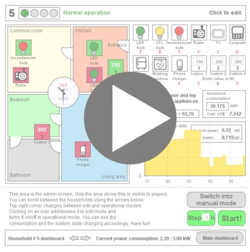

<div><h2>ARC initiative - Community Energy Grid Design</h2><table cellpadding="0" cellspacing="0" border="0"><tr><td colspan="2">
<a href="http://www.runthemodel.com/models/1297/" target="_blank">
</a></td></tr>
<tr><td style="padding-right:10px; padding-top: 2px;" valign="top"></br><a target="_blank" href="http://www.runthemodel.com/models/run.php?id=1297"></a></td><td align="right"></td></tr></table></div></br>
<div>
Developed with <a href="http://anylogic.com" target="_blank">simulation software AnyLogic</a></br>
requires <a href="https://www.java.com/en/download/">JAVA</a>, with <a href="http://www.java.com/en/download/help/jcp_security.xml">security settings</a>
set to <b>medium</b> or lower to run</div>
